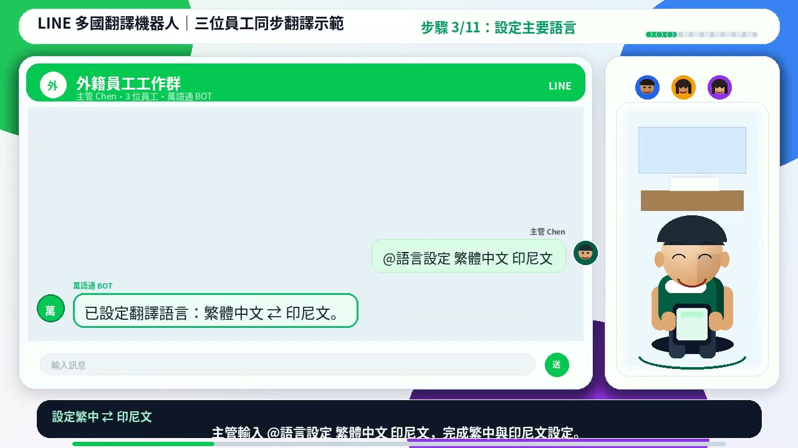

第一次設定最常見的問題，不是功能故障，而是少做了某一步：只有加入好友卻沒有查看說明、設定語言後沒有測試，或把 Bot 放進群組後直接用重要訊息試驗。比較穩定的做法，是先用不涉及姓名、金額與工安的簡短句子完成測試。
開始前先準備三件事
- 確認加入的是萬語通官方 LINE 帳號，LINE ID 為
@969wpxno。 - 先決定群組主要需要哪些語言，例如繁體中文、印尼文、越南文或菲律賓語。
- 準備兩句測試文字：一句日常通知、一句簡單回覆。正式工安、醫療或付款內容留到測試通過後再使用。
安全提醒翻譯可以降低誤會，但涉及工安、醫療、法律、薪資與金額時，仍應由知道情境的人再次確認。
五個步驟完成第一次設定
加入萬語通 LINE 官方帳號
用手機開啟加入頁，按「手機直接加入 LINE」；桌機使用者可掃描頁面上的 QR Code。
先傳送說明指令
在與 Bot 的個人對話中傳送
@說明，先確認目前可用指令與方案狀態。需要看完整語言清單時，傳送@支援語言。查看或設定翻譯語言
傳送
@語言查看目前設定。需要設定一組雙向翻譯時，可依畫面提示傳送語言設定指令，例如@語言設定 繁體中文 印尼文。先在個人對話測試
輸入「明天早上八點集合」這類簡短句子，確認 Bot 有正常回覆。再用目標語言輸入一句回覆，確認能翻回繁體中文。
把 Bot 加入工作群組
完成個人測試後再加入群組，傳送
@群組說明查看群組指令。先用同一組測試句確認，再開始處理正式工作通知。

第一輪測試要測什麼？
| 測試項目 | 建議輸入 | 要確認的結果 |
|---|---|---|
| 中文翻到目標語言 | 明天早上八點集合 | 語言正確、時間沒有被改動 |
| 目標語言翻回中文 | 請員工用自己的語言回覆「收到」 | 主管能看懂回覆內容 |
| 人名與代號 | A 線、B 機台、員工暱稱 | 專有名詞是否需要人工補充 |
| 群組流程 | 測試通知後請一人回覆 | 群組中訊息順序清楚、沒有漏回 |
不要只測一句「你好」。工作現場真正容易出錯的是時間、數量、機台名稱、地點與否定句。第一次設定就把這些元素各測一次，之後較容易建立固定的公告格式。
完成設定後的檢查清單
- 知道用
@語言查看目前設定。 - 至少完成一次雙向文字翻譯。
- 群組中的主管與一名員工都實際測試過。
- 知道重要內容仍需要人工確認。
- 需要 OCR、語音、摘要或報表時，已查看免費版與付費版差異。
常見問題
加入好友後為什麼沒有自動翻譯？
先傳送 @說明 與 @語言，確認目前模式與語言設定，再輸入一般文字測試。若仍沒有回覆，請保留畫面並透過官方客服表單詢問。
可以一開始就用工安或付款訊息測試嗎？
不建議。先用沒有風險的日常句子確認流程；涉及安全、醫療、法律或金額的內容，必須人工再確認。
指令一定要完全照本文輸入嗎？
本文整理常用流程，但 Bot 會持續更新。若畫面回覆的指令格式與本文不同，請以 Bot 當下的 @說明 為準。